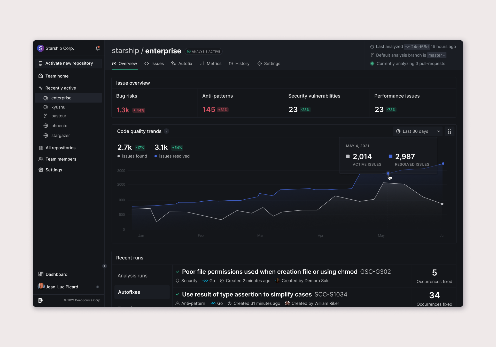
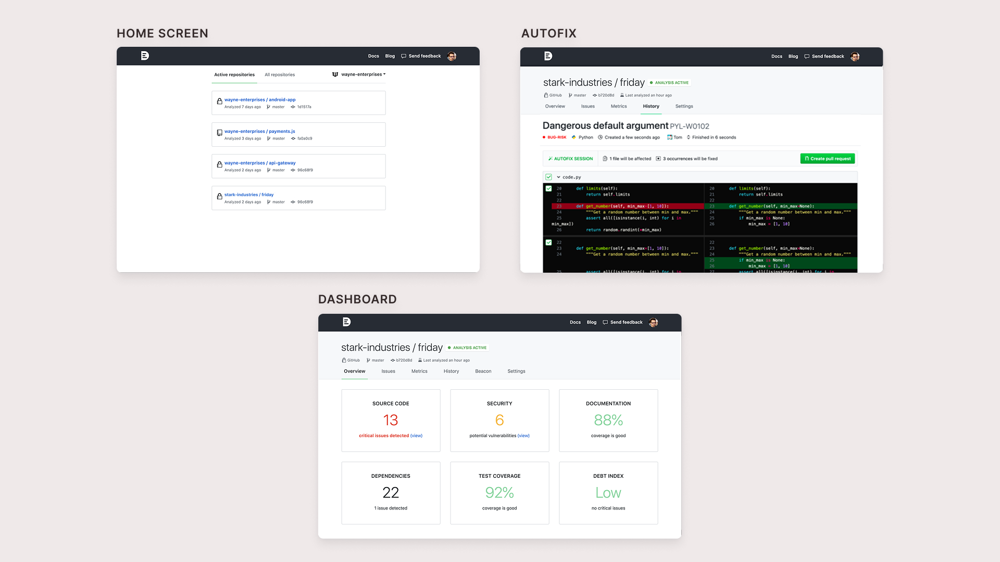
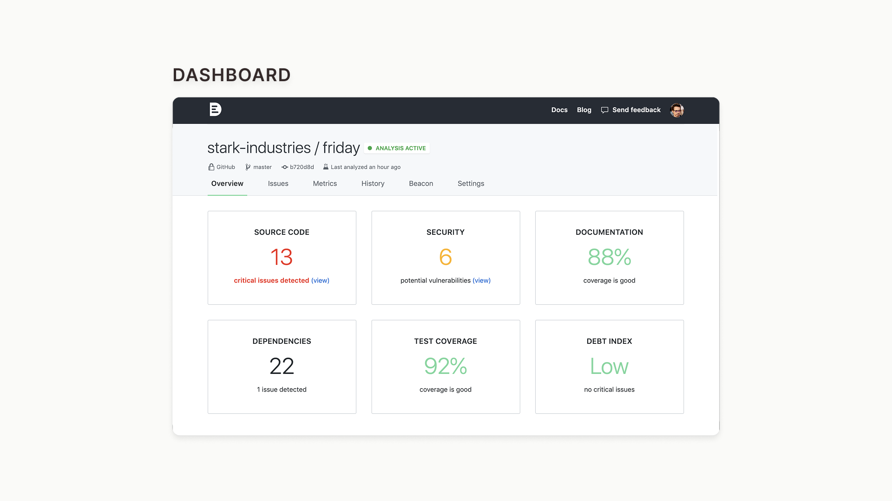
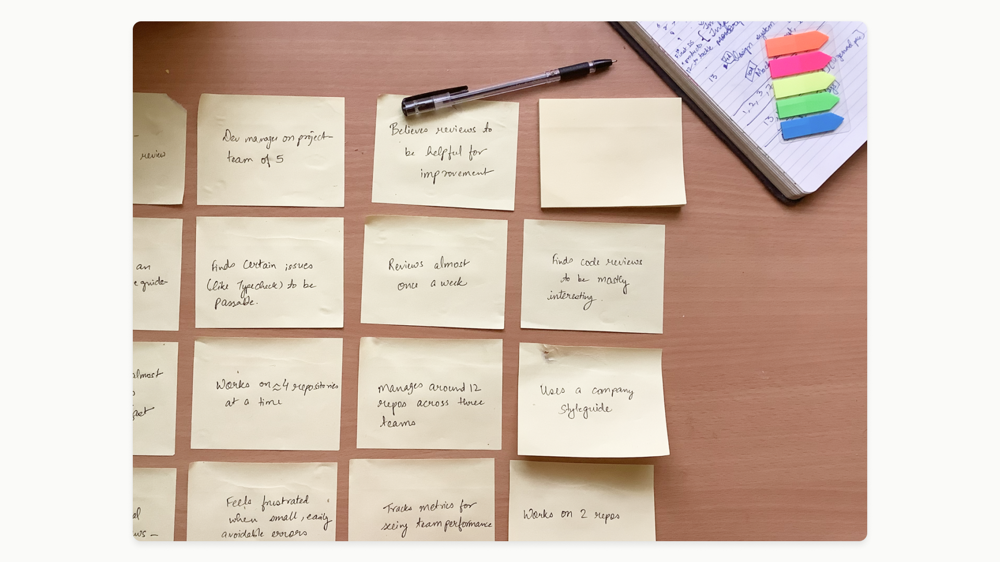
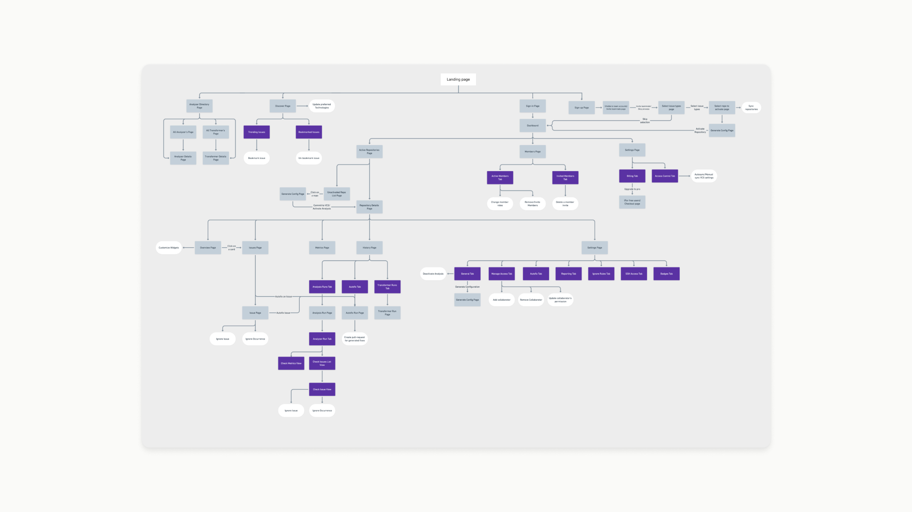
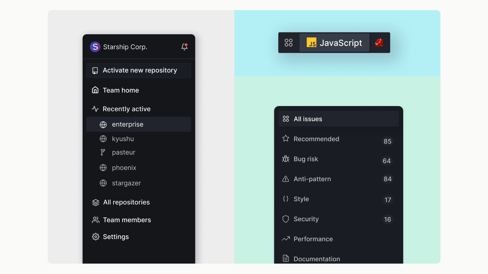
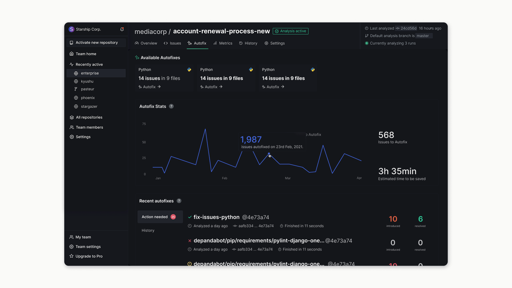
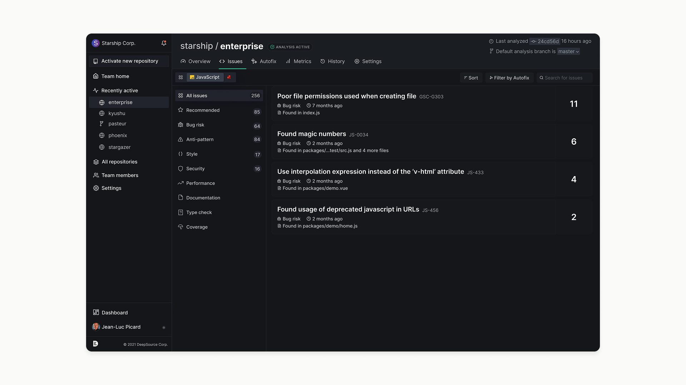
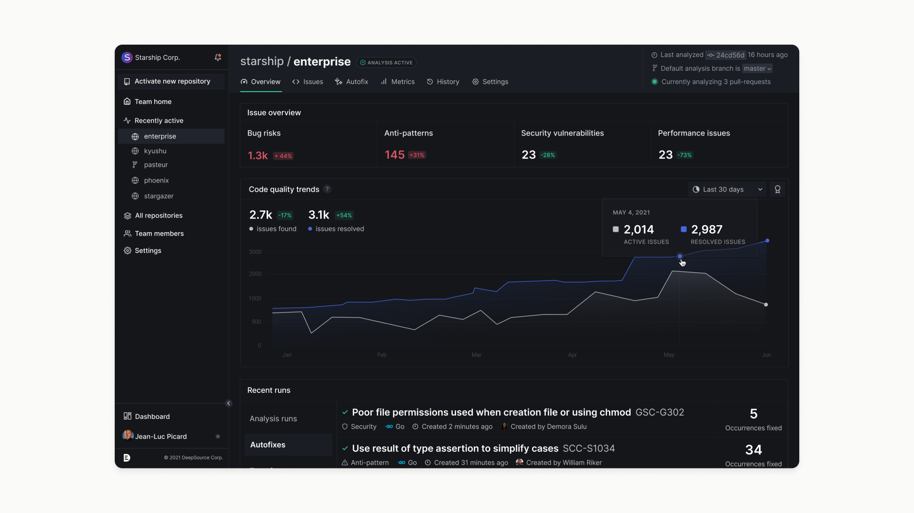

DeepSource is a static analysis tool that catches code quality issues on every pull request, before bad code reaches the main branch. When I joined as the first and only designer, the product worked but felt unfinished — inconsistent components, navigation that confused users, and a key feature almost nobody was using.
Over nine months I led a full platform redesign and rebrand: from a UX audit and user research through to a new information architecture, a rebuilt design system, and high-fidelity handoff across every major surface.
See product →DeepSource platform overview

DeepSource cover — screen 1

DeepSource cover — screen 2

DeepSource cover — screen 3
Before touching anything, I spent time inside the existing product mapping where it broke down. The navigation had no affordance for going back to the repository list — the only way was clicking the logo. Users working across two or more repositories, which was the majority, had no reliable way to switch between them. The product's most powerful feature, Autofix, was buried to the point that most users didn't know it existed.
The design itself was inconsistent throughout — multiple versions of the same component, no standardisation, no underlying system. Every new feature added more debt.
I ran interviews with the team and with users and found the same themes appearing consistently: navigation felt unpredictable, people were regularly ending up on the homepage when they were trying to go somewhere else, and the overview screens gave them colours but no real signal. There was no way to answer a simple question like "is our code quality getting better over time?"
Card sorting helped me move from a list of complaints to a prioritised scope — it surfaced which improvements were felt most acutely and which features users actually understood vs. which ones they were guessing at.

User research and card sorting
Before designing anything, I needed principles that were specific enough to make decisions with — not values that could mean anything.
The previous product tried to speak to everyone. The rebrand committed to a bottom-up approach: appeal to the developers who use the tool every day, not the managers who approve the budget. Familiar design language, no enterprise-sales aesthetic, UX that gets out of the way. The bet was that if developers loved it, adoption would follow. It did.
Metrics needed to tell a story. Showing a number in red or green is not a metric — it's a colour. The redesign introduced historical trend views so teams could see movement over time, not just current state. Managers and developers needed different things from the same data, and the interface had to serve both without becoming a dashboard for dashboards.
With nine months and a lot of ground to cover, I drove the design system with atomic design from the start. Tokens and base components before anything else, so that every screen built on a stable foundation rather than inventing its own patterns. The goal wasn't a perfect system — it was a system that could survive new releases without accumulating more debt.

Design system components
The fix for the navigation problem was a persistent sidebar that let users move between repositories without losing context and without hunting for the logo. Repository switching became a first-class interaction rather than an accident waiting to happen. Issue and language filters were added to surface the most relevant information first, so users working on a specific area weren't sifting through everything.
Autofix — which lets developers push fixes directly without manually committing to their VCS — was genuinely valuable but almost invisible. I gave it a dedicated tab and introduced metrics showing time saved, making the value concrete rather than implied. A filter on the issues page also let users surface only the issues with available autofixes, so the feature was accessible exactly when and where it was relevant.
The redesigned repository home screen showed current status and historical trends together, in the same view. The goal was for a developer to land on this screen and immediately understand both where things stand and whether they're moving in the right direction — without clicking anywhere else first.

Redesigned screens — navigation and repository overview

Redesigned screens — issue detail view

Redesigned screens — metrics and trends

Autofix tab and issue filters
Autofix usage
+72%
after surfacing the feature where it mattered
Seed funding secured
$2.6M
during the redesign period
Design system
0→1
atomic system built to survive new releases
The redesign demo impressed enough that founders were fielding questions about who designed it. Active users grew, enterprise deals followed, and revenue increased. The bet on developer-first design — building for the people using the tool, not the people buying it — turned out to be the right one.
What I'd do differently
Nine months is enough time to do this well, but I underestimated how much time the design system would need once we got into complex components. Atomic design was the right call — I'd just start the documentation earlier, before the component count makes it feel impossible to catch up.
The Autofix result validated something worth carrying forward: discoverability is not a nice-to-have. A 72% usage increase came from putting a feature where people could find it, not from changing the feature itself.